LabVIEW VI Comparison Report
06:57:27 10/29/2026
First VI: /workspace-base/src/examples/NEVSTOP/Communicable State Machine(CSM)/4. Advance Examples/4. Global Log Filter Example/Filter From Subscriber(Queue).viSecond VI: /workspace/src/examples/NEVSTOP/Communicable State Machine(CSM)/4. Advance Examples/4. Global Log Filter Example/Filter From Subscriber(Queue).vi
| Front Panel Overview | ||
|
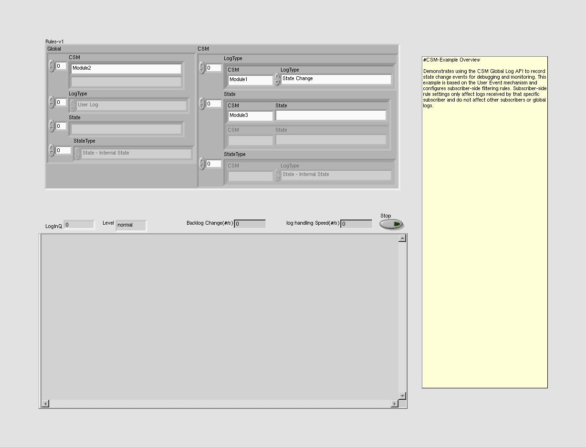 |
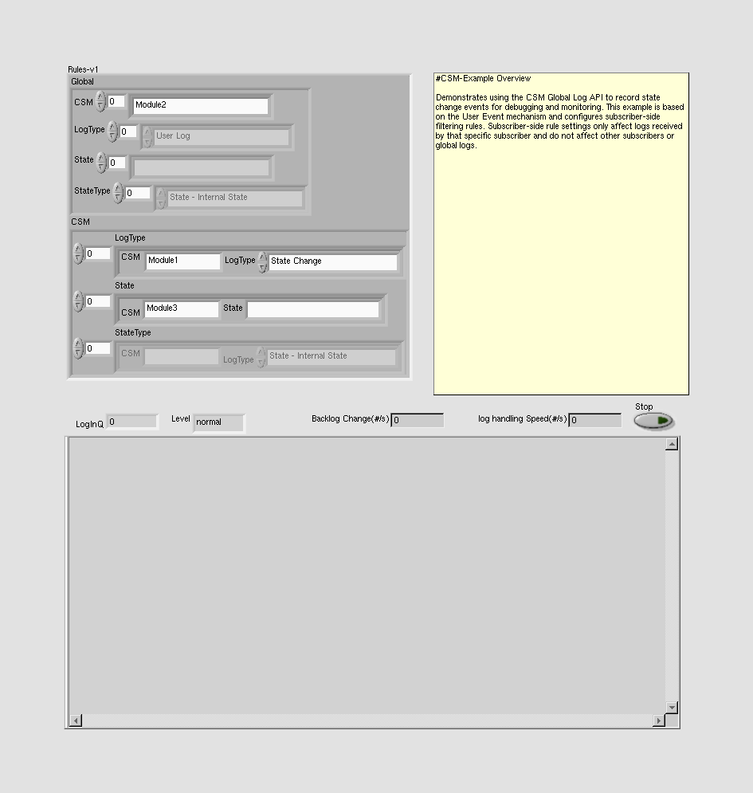 | |
| Block Diagram Overview | ||

|
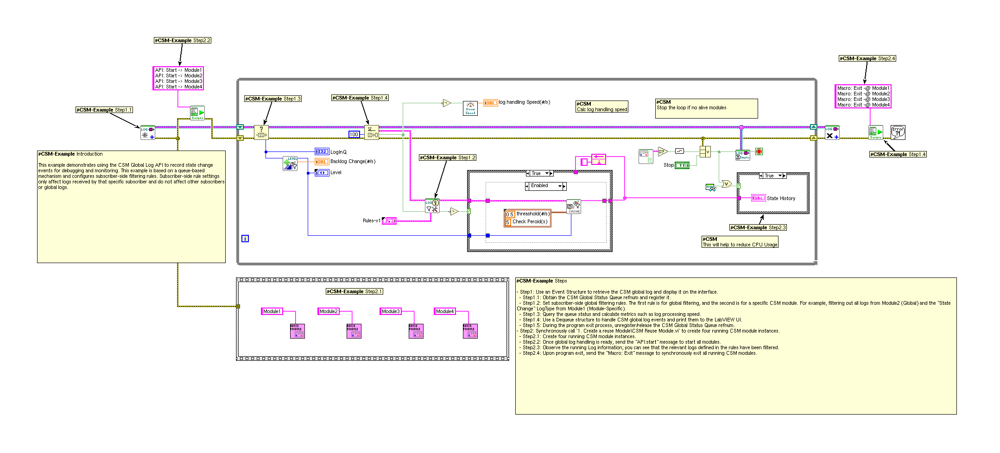 |
- Front Panel
- Front Panel Position/Size
- Block Diagram Functional
- Block Diagram Cosmetic
- VI Attribute
Detailed Information
1. Block Diagram objects
| /workspace-base/src/examples/NEVSTOP/Communicable State Machine(CSM)/4. Advance Examples/4. Global Log Filter Example/Filter From Subscriber(Queue).vi | /workspace/src/examples/NEVSTOP/Communicable State Machine(CSM)/4. Advance Examples/4. Global Log Filter Example/Filter From Subscriber(Queue).vi | |

|
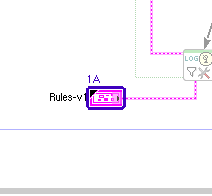 |
- Front Panel Terminal "Rules-v1" - numeric representation : changed from "'Rules-v1': typedef 'Communicable State Machine.lvlib:_CSM_GlobalLog Filter Rules - v1.0.ctl'\ncluster of 2 elements \n 'Global': cluster of 4 elements \n 'CSM': 1D array of \n 'String': string \n 'LogType': 1D array of \n " to "'Rules-v1': typedef 'Communicable State Machine.lvlib:_CSM_GlobalLog Filter Rules - v1.0.ctl'\ncluster of 2 elements \n 'Global': cluster of 4 elements \n 'CSM': 1D array of \n 'String': string \n 'LogType': 1D array of \n "
2. Front Panel - Panel
| /workspace-base/src/examples/NEVSTOP/Communicable State Machine(CSM)/4. Advance Examples/4. Global Log Filter Example/Filter From Subscriber(Queue).vi | /workspace/src/examples/NEVSTOP/Communicable State Machine(CSM)/4. Advance Examples/4. Global Log Filter Example/Filter From Subscriber(Queue).vi | |
|
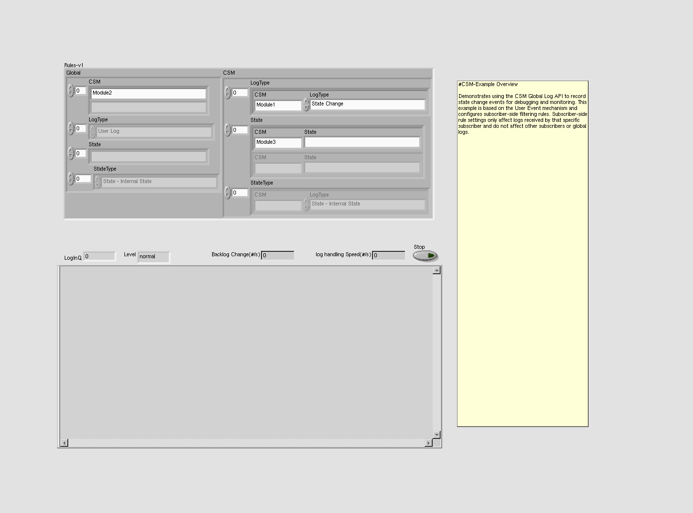 |
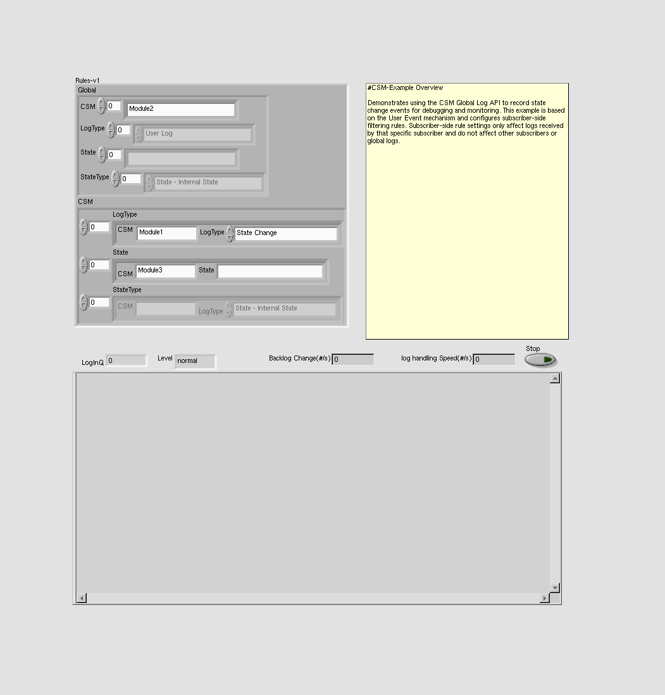 |
- Panel - panel size
3. Front Panel - String
| /workspace-base/src/examples/NEVSTOP/Communicable State Machine(CSM)/4. Advance Examples/4. Global Log Filter Example/Filter From Subscriber(Queue).vi | /workspace/src/examples/NEVSTOP/Communicable State Machine(CSM)/4. Advance Examples/4. Global Log Filter Example/Filter From Subscriber(Queue).vi | |
|
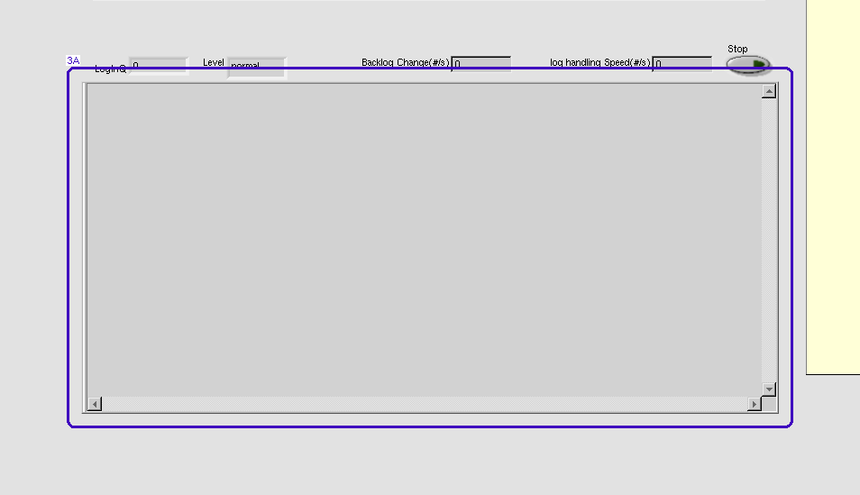 |
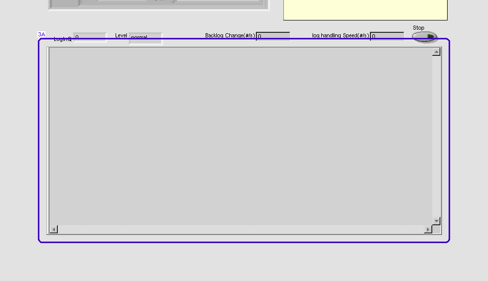 |
- String "State History" - moved : changed from "(24,442)" to "(24,496)"
4. Front Panel - Type Definition
| /workspace-base/src/examples/NEVSTOP/Communicable State Machine(CSM)/4. Advance Examples/4. Global Log Filter Example/Filter From Subscriber(Queue).vi | /workspace/src/examples/NEVSTOP/Communicable State Machine(CSM)/4. Advance Examples/4. Global Log Filter Example/Filter From Subscriber(Queue).vi | |
|
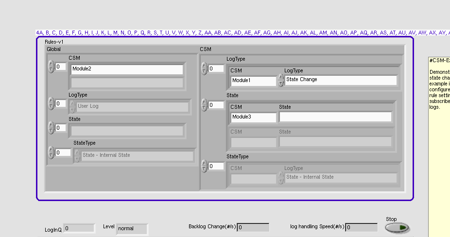 |
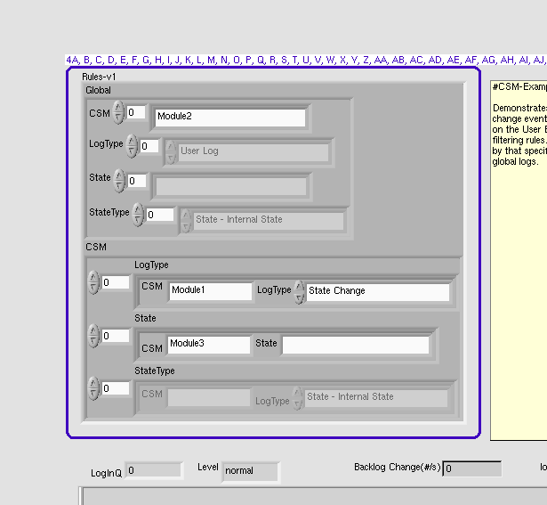 |
- Name Label - lock
- Name Label - moved : changed from "(4,4)" to "(4,4)"
- Name Label - lock
- Name Label - moved : changed from "(4,4)" to "(4,6)"
- Cluster "Global" - moved/resized : changed from "(4,8) 315*235" to "(4,8) 304*162"
- Name Label - lock
- Name Label - moved : changed from "(45,4)" to "(4,12)"
- Name Label - lock
- Name Label - moved : changed from "(4,4)" to "(4,14)"
- Name Label - lock
- Name Label - moved : changed from "(45,80)" to "(4,46)"
- Name Label - lock
- Name Label - moved : changed from "(45,130)" to "(4,84)"
- Name Label - moved : changed from "(55,179)" to "(4,123)"
- Cluster "CSM" - moved/resized : changed from "(319,10) 423*284" to "(4,186) 427*187"
- Type Definition "Rules-v1" - strict vs. non-strict : changed from "non-strict" to "strict"
- Cluster - autosizing
- Cluster - resized : changed from "746*308" to "435*387"
- Type Definition "Rules-v1" - moved/resized : changed from "(37,45) 746*308" to "(27,41) 435*387"
- String "CSM" - moved : changed from "(4,20)" to "(32,4)"
- String "CSM" - moved : changed from "(4,20)" to "(34,4)"
- Array "LogType" - moved/resized : changed from "(55,20) 364*59" to "(55,20) 368*44"
- Frame - background color
- Array - number of visible elements
- Array "State" - moved/resized : changed from "(55,95) 353*110" to "(55,80) 345*43"
- Frame - background color
- Array "StateType" - moved/resized : changed from "(55,221) 364*59" to "(55,139) 366*44"
- Frame - background color
- Cluster "LogType" - resized : changed from "356*51" to "360*36"
- Cluster "LogType" - resized : changed from "345*51" to "337*35"
- Cluster "LogType" - resized : changed from "356*51" to "358*36"
- Array - number of visible elements
- Array "CSM" - moved/resized : changed from "(45,18) 245*62" to "(73,7) 184*35"
- Frame - background color
- Array "State" - moved/resized : changed from "(45,144) 245*35" to "(74,84) 184*35"
- Frame - background color
- String "String" - resized : changed from "237*27" to "176*27"
- String "State" - resized : changed from "237*27" to "176*27"
- Array "LogType" - moved/resized : changed from "(45,94) 256*36" to "(88,45) 195*36"
- Frame - background color
- Type Definition "CSM_GlobalLog_MSG_TYPE" - resized : changed from "237*27" to "176*27"
- Array "StateType" - moved/resized : changed from "(55,195) 256*36" to "(105,122) 195*36"
- Frame - background color
- Type Definition "LogType" - resized : changed from "237*27" to "176*27"
- Enum - resized : changed from "237*27" to "176*27"
- Name Label - lock
- Name Label - moved : changed from "(104,4)" to "(132,8)"
- Name Label - lock
- Name Label - moved : changed from "(115,4)" to "(132,14)"
- Name Label - lock
- Name Label - moved : changed from "(115,4)" to "(134,8)"
- String "State" - moved/resized : changed from "(104,18) 237*27" to "(161,4) 172*27"
- Enum - resized : changed from "237*27" to "168*27"
- Type Definition "LogType" - moved/resized : changed from "(115,18) 237*27" to "(186,5) 168*27"
- Type Definition "LogType" - moved/resized : changed from "(115,18) 237*27" to "(188,5) 168*27"
- Enum - number of text items : changed from "12" to "14"
- Numeric Text - moved : changed from "(299,107)" to "(281,58)"
- Numeric Text - moved : changed from "(309,208)" to "(298,135)"
- Numeric Text - moved : changed from "(354,26)" to "(356,13)"
- Numeric Text - moved : changed from "(354,26)" to "(358,13)"
5. Front Panel - Numeric
| /workspace-base/src/examples/NEVSTOP/Communicable State Machine(CSM)/4. Advance Examples/4. Global Log Filter Example/Filter From Subscriber(Queue).vi | /workspace/src/examples/NEVSTOP/Communicable State Machine(CSM)/4. Advance Examples/4. Global Log Filter Example/Filter From Subscriber(Queue).vi | |
|
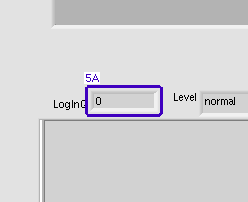 |
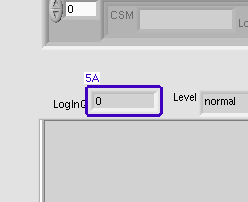 |
- Numeric "LogInQ" - moved : changed from "(76,414)" to "(76,468)"
6. Front Panel - Type Definition
| /workspace-base/src/examples/NEVSTOP/Communicable State Machine(CSM)/4. Advance Examples/4. Global Log Filter Example/Filter From Subscriber(Queue).vi | /workspace/src/examples/NEVSTOP/Communicable State Machine(CSM)/4. Advance Examples/4. Global Log Filter Example/Filter From Subscriber(Queue).vi | |
|
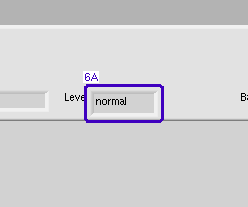 |
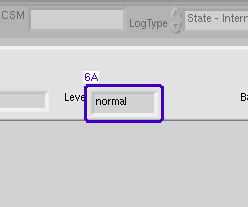 |
- Type Definition "Level" - moved : changed from "(185,414)" to "(185,468)"
7. Front Panel - Numeric
| /workspace-base/src/examples/NEVSTOP/Communicable State Machine(CSM)/4. Advance Examples/4. Global Log Filter Example/Filter From Subscriber(Queue).vi | /workspace/src/examples/NEVSTOP/Communicable State Machine(CSM)/4. Advance Examples/4. Global Log Filter Example/Filter From Subscriber(Queue).vi | |
|
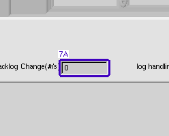 |
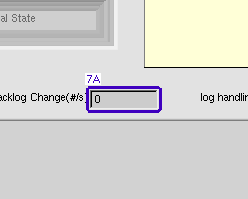 |
- Numeric "Backlog Change(#/s)" - moved : changed from "(434,414)" to "(434,468)"
8. Front Panel - Label
| /workspace-base/src/examples/NEVSTOP/Communicable State Machine(CSM)/4. Advance Examples/4. Global Log Filter Example/Filter From Subscriber(Queue).vi | /workspace/src/examples/NEVSTOP/Communicable State Machine(CSM)/4. Advance Examples/4. Global Log Filter Example/Filter From Subscriber(Queue).vi | |
|
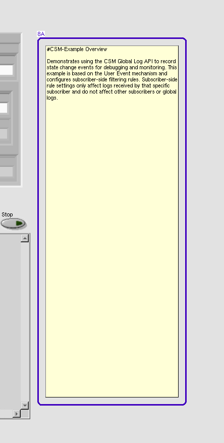 |
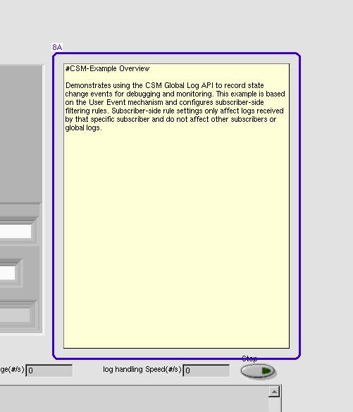 |
- Label - moved/resized : changed from "(828,72) 264*696" to "(488,41) 321*405"
9. Front Panel - Numeric
| /workspace-base/src/examples/NEVSTOP/Communicable State Machine(CSM)/4. Advance Examples/4. Global Log Filter Example/Filter From Subscriber(Queue).vi | /workspace/src/examples/NEVSTOP/Communicable State Machine(CSM)/4. Advance Examples/4. Global Log Filter Example/Filter From Subscriber(Queue).vi | |
|
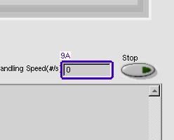 |
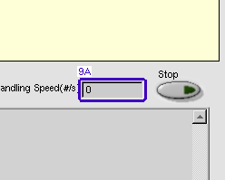 |
- Numeric "log handling Speed(#/s)" - moved : changed from "(657,414)" to "(657,468)"
10. Front Panel - Boolean
| /workspace-base/src/examples/NEVSTOP/Communicable State Machine(CSM)/4. Advance Examples/4. Global Log Filter Example/Filter From Subscriber(Queue).vi | /workspace/src/examples/NEVSTOP/Communicable State Machine(CSM)/4. Advance Examples/4. Global Log Filter Example/Filter From Subscriber(Queue).vi | |
|
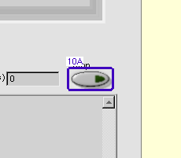 |
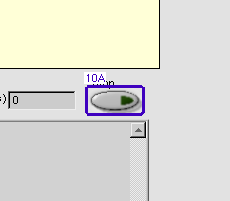 |
- Boolean "Stop" - moved : changed from "(739,413)" to "(739,467)"